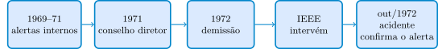
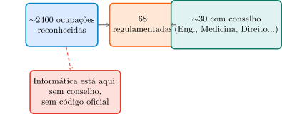
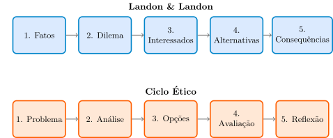

Computação e Sociedade
2026-08-30
Três engenheiros do Bay Area Rapid Transport Project alertam, desde 1969, sobre falhas de segurança no sistema de trens automatizados.
“The response was ‘don’t make trouble.’”
Em 1971, contornam a hierarquia e levam o caso ao conselho diretor. A história vaza à imprensa — e eles são demitidos sem justa causa.
Argumento do IEEE
“According to the IEEE’s professional code, engineers are responsible for the ‘safety, health and welfare of the public.’ […] the professional code is an implicit aspect of the employment contract.”

Aviso
Três semanas após o início da operação, o sistema tem um acidente. Os engenheiros aceitam um acordo — o emprego não voltou.
Nota
Se seguir o código profissional não protegeu quem o seguiu, para que serve um código de conduta?
O plano de hoje:
Pergunta provocadora — um argumento correto, mas sem poder de se fazer valer
O IEEE defendeu, numa carta ao tribunal, que seguir o código profissional deveria contar como cumprir uma obrigação implícita do contrato de trabalho — um argumento logicamente coerente. Mesmo assim, os engenheiros perderam o emprego e só receberam um acordo extrajudicial, sem que a Justiça validasse formalmente a tese do IEEE. O que esse desfecho sugere sobre a diferença entre um código estar “certo” no papel e um código ter força real?
Dica: pense no que faltou entre o IEEE ter um argumento coerente e esse argumento efetivamente proteger os três engenheiros — quem, ou o quê, tinha o poder de fazer a diferença?
Dica
Retomando: um argumento certo no papel não bastou porque faltava poder institucional de fazê-lo valer — exatamente a lacuna que os Blocos 2 a 4 vão examinar.
Pergunta provocadora — um código com muitas cláusulas: elas sempre convergem?
O código da ACM tem cláusulas em três partes diferentes — princípios éticos gerais, responsabilidades profissionais, liderança. Elas foram pensadas para se reforçar mutuamente. Mas será que uma ação pode cumprir uma cláusula e, ainda assim, violar outra do mesmo código?
Dica: pense num sistema que cumpre a letra do princípio 1.1 (“contribuir para a sociedade”) só no discurso institucional, mas nunca chega a fazer o que o princípio 2.5 pede (avaliação de riscos).
Dica
Retomando: as cláusulas de um mesmo código podem entrar em tensão entre si — cumprir uma na letra não garante cumprir outra na prática.
“Codes of conduct are codes in which organizations lay down guidelines for responsible behavior of their members.”
— Van de Poel & Royakkers (2011, p. 33)
Código Profissional
Formulado por associações (ex.: IEEE, NSPE, ACM)
Código Corporativo
Formulado pela própria empresa empregadora
“Engineers shall perform services only in the areas of their competence.” — NSPE
> “Engineers shall hold paramount the safety, health, and welfare of the public.” — NSPE
> “Engineers shall maintain their relevant competences […] and only undertake tasks for which they are competent.” — FEANI
Aviso
“Esta profissão ainda não é reconhecida oficialmente no Brasil […] não há um código de ética profissional formal.”
— Maciel & Viterbo (2020, p. 199)
Dois códigos de adesão voluntária, bem mais elaborados que NSPE/FEANI:
| Parte | O que cobre |
|---|---|
| 1. Princípios éticos gerais | Valores morais amplos |
| 2. Responsabilidades profissionais | Qualidade, competência, conduta |
| 3. Liderança profissional | Obrigações de quem gerencia |
Fonte primária (acm.org/code-of-ethics) — não uma citação literal dos livros-texto.
“1.1 Contribute to society and to human well-being, acknowledging that all people are stakeholders in computing.”
Recomendador que amplifica desinformação afeta a sociedade, não só quem clica.
> “1.4 Be fair and take action not to discriminate.”
Testar taxas de erro por subgrupo, não só a acurácia agregada.
“2.1 Strive to achieve high quality […]”
Não lançar sabendo que a cobertura de testes é insuficiente, só por prazo de marketing.
> “2.5 Give comprehensive […] evaluations […] including analysis of possible risks.”
Documentar a taxa de erro por subgrupo de um sistema de reconhecimento facial antes de vender — não escondê-la.
“3.4 Articulate, apply, and support policies […] that reflect the principles of the Code.”
Um tech lead que institui canal seguro para levantar preocupação ética — não deixa só à boa vontade.
> “3.7 Recognize and take special care of systems that become integrated into the infrastructure of society.”
Um sistema de pagamento nacional (Pix) pede padrão de cuidado maior que um app de nicho.
PUBLIC — interesse público acima de tudo (o que o BART invocou)
CLIENT AND EMPLOYER — interesses do cliente, consistentes com PUBLIC
PRODUCT · JUDGMENT · MANAGEMENT — padrão técnico, julgamento independente, gestão ética
PROFESSION · COLLEAGUES · SELF — reputação da profissão, colegas, aprendizado contínuo
“Software engineers shall act consistently with the public interest.”
Dica
É exatamente o princípio que o IEEE invocou na carta amicus curiae — décadas antes de este código de Engenharia de Software específico existir, mas com a mesma lógica central.
| Tipo | Objetivo |
|---|---|
| Aspiracional | Expressar valores ao mundo externo |
| Consultivo | Ajudar o julgamento moral em situações concretas |
| Disciplinar | Garantir conformidade de todos |
NSPE, FEANI, ACM, IEEE-CS/ACM: todos consultivos. Nenhum é disciplinar de fato — falta uma estrutura institucional com poder de fiscalizar (Bloco 3).
Dica
Julgue V ou F — a questão só conta se acertar os 4 itens:
Dica
Pergunta provocadora — consultivo, mas não disciplinar: o que isso muda na prática?
Vimos que NSPE, FEANI, ACM e IEEE-CS/ACM são todos consultivos, mas nenhum é disciplinar de fato. Se um profissional violar abertamente uma cláusula de qualquer um desses códigos, o que exatamente acontece com ele, hoje, só por causa disso?
Dica: separe duas perguntas — “o código diz que isso é errado” e “existe alguém com poder de impedir esse profissional de continuar exercendo a profissão por causa disso”.
Dica
Retomando: é exatamente essa lacuna — poder legal de excluir do exercício — que o próximo bloco examina.
“Estes códigos são elaborados pelos respectivos Conselhos que representam e fiscalizam o exercício de cada profissão.”
— Maciel & Viterbo (2020, p. 199)
Três funções: registra · fiscaliza · poder legal de impedir o exercício por quem não é registrado.
Lei 5.194/1966, Art. 6º
“Exerce ilegalmente a profissão de engenheiro […] a pessoa física ou jurídica que […] não possua registro nos Conselhos Regionais.”
Dica
Sem essa lei por trás, “disciplinar” no papel não teria força — ficaria no nível dos códigos do Bloco 2.
Em vez de licenciar quem exerce, regula diretamente como a atuação deve ocorrer — qualquer um que trate dados pessoais, com multas reais.
Finalidade · Adequação e Necessidade · Livre Acesso e Transparência
Segurança e Prevenção · Não Discriminação · Responsabilização
Lei 13.709/2018, Art. 6º — fonte primária/legal, não citação literal dos livros-texto.
3. Se exposto, que dano causaria a uma pessoa real? 4. Algum proxy poderia discriminar um grupo sem intenção? 5. A equipe conseguiria provar conformidade, se pedissem hoje?
| Conselho | LGPD/GDPR | |
|---|---|---|
| Regula | Quem exerce | Como os dados são tratados |
| Aplica-se a | Só a profissão regulamentada | Qualquer um que trate dados |
| A Informática tem? | Não | Parcialmente |
Dica
Regulação judicializada parcial — por um mecanismo, não pelo outro.
Dica
Julgue V ou F — a questão só conta se acertar os 4 itens:
Dica
Pergunta provocadora — dois mecanismos de força legal: quando um supre a ausência do outro?
A Informática não tem conselho de profissão, mas já tem a LGPD. Isso significa que, na prática, um profissional de computação no Brasil já está sob alguma forma de regulação judicializada — só que parcial. Em que situações concretas essa parcialidade importa, e em quais ela não faz diferença?
Dica: pense em um profissional de computação cujo trabalho nunca envolve dado pessoal nenhum — o que exatamente protege (ou não protege) esse profissional, hoje?
Dica
Retomando: a Informática tem hoje regulação judicializada parcial — por um mecanismo (dados), não pelo outro (registro/fiscalização de quem exerce).
Pergunta provocadora — regulamentar a Informática: o que cada argumento resolve, e o que não resolve?
O próprio livro lista desvantagens reais de regulamentar a profissão — custo, perda de multidisciplinaridade, fiscalização que não garante qualidade. Nenhuma dessas desvantagens, isoladamente, é um argumento definitivo contra regulamentar. O que, então, cada uma delas realmente mostra sobre o que um conselho de profissão consegue e não consegue resolver?
Dica: separe “problemas que um conselho resolveria” de “problemas que continuariam existindo mesmo com um conselho”.
Dica
Retomando: cada desvantagem aponta para um problema real que um conselho não resolveria por si só — não para a conclusão de que regulamentar é, sozinho, bom ou mau.
1940s: primeiros computadores digitais eletrônicos no mundo. No Brasil, a história da Computação na universidade é “bem curta” (Maciel & Viterbo, 2020, p. 12).
1968 — UFBA cria o primeiro Bacharelado do país (Processamento de Dados). 1969 — Unicamp cria seu Bacharelado em Ciência da Computação.
2016: 1288 cursos de graduação, 133 mil ingressantes, 42 mil concluintes naquele ano só.
De quase inexistente em 1950 a mais de mil cursos em 2016 — rápido o bastante para a questão da regulamentação profissional já se tornar relevante nos anos 1970, só 20 anos após os primeiros computadores chegarem ao país.

“Há […] grupos que defendem […] um modelo semelhante a dos engenheiros, mas há outros que veem vantagens […] que o exercício profissional em Informática continue livre.”
Desvantagens de regular (listadas pelo livro):
2013: NCEES cria exame de licenciamento (PE) para Software Engineering.
Aviso
2019: descontinuado. Só 81 candidatos em 5 aplicações — desinteresse voluntário, não proibição.
“Engineer” é título legalmente protegido por reguladores provinciais (ex.: APEGA).
Importante
2024: Alberta abre exceção legal para “software engineer” sem licença da APEGA.
Títulos de engenharia protegidos por carta régia — mas o CITP (British Computer Society) é voluntário, sem licença compulsória.
Dica
Meio-termo entre “regulamentação plena” e “nada” — nem Brasil, nem EUA adotaram isso para computação.
EUA: exame morreu por desinteresse. Canadá: tensão aguda, província recuando. Reino Unido: via voluntária, meio-termo.
Nota
É uma versão local de uma pergunta sem resposta óbvia em nenhum lugar do mundo.
Só códigos voluntários (ACM, IEEE-CS/ACM) para computação no Brasil — nenhum disciplinar, por falta de conselho.
A única regulação judicializada que hoje alcança a atuação em computação é parcial: a LGPD regula o tratamento de dados, não define quem pode se chamar “profissional de Computação”.
Dica
Julgue V ou F — a questão só conta se acertar os 4 itens:
Dica
Pergunta provocadora — três países, três desfechos: o que muda a “força” de uma proteção de título?
Nos três países, a “força” da proteção do título de engenheiro parece vir de fontes diferentes — adesão voluntária, poder legal, ou nada disso. O que, exatamente, diferencia um exame que morre por desinteresse (EUA) de um título protegido que ainda assim precisa abrir exceções (Canadá)?
Dica: pense se a “força” de uma regra vem de quantas pessoas escolhem segui-la voluntariamente, ou de haver ou não sanção legal por não seguir.
Dica
Retomando: a “força” de uma regra vem de sanção legal, não de adesão voluntária — e nenhum dos três países escapou dessa tensão.
“Codes of conduct are a form of self-regulation. […] to avoid government regulation or to silence dissident voices.”
Caso: John Tozer (1989)
Engenheiro australiano criticou publicamente uma decisão de saneamento — foi expulso da ACEA e perdeu contratos que exigiam essa filiação.
Lema: “Don’t be Evil”. Prática: concorda em censurar buscas (“Grande Firewall”).
Importante
“Self-censorship […] conflicts deeply with our core principles.” — o próprio VP do Google.
Código de ética interno vago custa reputação só se exposto.
Lei de proteção de dados com sanções reais custa dinheiro e liberdade de ação independentemente de exposição pública.
Dica
É exatamente essa diferença que motiva, historicamente, autorregulação usada como substituto retórico de regulação real.
Lealdade Acrítica
“Placing the interests of the employer […] above any other consideration.”
Lealdade Crítica
“Giving due regard to the interest of the employer, insofar as […] the employee’s […] ethics [allow].”
Os engenheiros do BART foram “desleais” só sob a leitura acrítica.
| Código | Confidencialidade? | Em risco ao público |
|---|---|---|
| NSPE | Sim | Informar autoridades |
| FEANI | Sim | Silente |
| IEEE | Não | Encoraja falar publicamente |
Aviso
O mesmo dilema do whistleblower das Aulas 1–2 — agora como um ponto em que os próprios códigos não concordam.
BART, reaberto: seguir o código pode conflitar diretamente com a sobrevivência no emprego.
Dica
Isso não invalida os códigos — mostra que são ponto de partida, não substituto, do julgamento moral nem da regulação de fato.
Dica
Julgue V ou F — a questão só conta se acertar os 4 itens:
Dica
Pergunta provocadora — se um código não pode ser “vivido” à risca, ele ainda vale alguma coisa?
A aula mostrou três limites diferentes de códigos de conduta — autointeresse/window-dressing, vagueza/contradição entre códigos, e a impossibilidade de proteger de fato quem os segue (BART). Será que esses três limites, somados, significam que um código de conduta é dispensável na prática?
Dica: pense na diferença entre “um código não resolve X por si só” e “um código não serve para nada”.
Dica
Retomando: os limites não tornam os códigos dispensáveis — mostram que são ponto de partida, não substituto, do julgamento moral.
Pergunta provocadora — sem código específico, sem estrutura nenhuma?
Snowden não era necessariamente um “engenheiro” filiado a nenhum conselho ou associação profissional formal. Nenhum código profissional tradicional (nem ACM, nem IEEE-CS/ACM) foi escrito pensando especificamente em alguém na posição dele. Isso significa que o caso está fora do alcance de qualquer código de conduta? Ou o princípio ACM 1.1 — “contribute to society and to human well-being, acknowledging that all people are stakeholders in computing” — já basta para orientar uma resposta, mesmo sem um código específico para vigilância em massa?
Dica: pense se “não ter um código específico para o seu cargo” é o mesmo que “não ter nenhum princípio ético relevante disponível”.
Dica
Retomando: faltar um código específico não deixa o caso sem nenhuma estrutura — a deliberação (Ciclo Ético, Landon & Landon) continua disponível mesmo ali.
“‘Ele é patriota ou traidor?’ e ‘o que é mais importante para a sociedade: segurança ou privacidade?’ […] Ou seja, uma questão ética!”
— Maciel & Viterbo (2020, p. 209)
Dica
Snowden não estava filiado a nenhum conselho ou associação profissional formal. O princípio ACM 1.1 (“all people are stakeholders in computing”) ainda se aplica aqui?

Nota
Observação nossa, não dos autores — tradições independentes, não se citam. Diferença notável: falta uma Fase 5 (reflexão) equivalente em Landon & Landon.
1. O que um código pode fazer? Expressar valores (aspiracional), orientar julgamento em situações concretas (consultivo, como ACM e IEEE-CS/ACM), ou disciplinar condutas (raro em códigos profissionais, mais comum em corporativos).
2. Quais estruturas dão força real a isso? Um conselho de profissão (registro + fiscalização + poder legal) torna um código disciplinar de fato — a Informática não tem um no Brasil. A LGPD faz algo análogo, mas regula o tratamento de dados, não quem pode exercer a profissão — regulação judicializada parcial, por um mecanismo, não pelo outro.
3. O que nenhuma dessas estruturas garante? Autointeresse disfarçado (window-dressing, e código como substituto de regulação real, casos Tozer e Google), vagueza e contradições entre códigos, e a impossibilidade de proteger de fato quem os segue (BART) — ponto de partida, não substituto, do julgamento moral.
Por isso a deliberação estruturada — Ciclo Ético ou o processo de Landon & Landon — continua indispensável, mesmo onde código, conselho e lei já existem.
Ponte para a Aula 4: engenharia de software como prática sociotécnica — papéis, comunicação (Lei de Conway), requisitos como processo social. Só depois, na Aula 5, a Parte 2 do curso, Computação e Seus Impactos, começando pelo custo material e ambiental da infraestrutura digital.
UNICAMP — Instituto de Computação